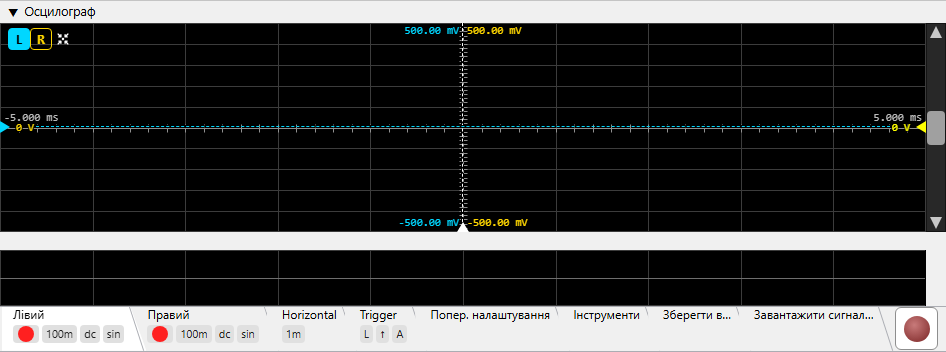

Ця сторінка описує елементи керування осцилографом. Про внутрішній принцип роботи — тригерування, sin x/x реконструкцію між відліками, придушення мережевого фону — читайте у Теорія роботи ▸ Осцилограф.
Відображення сигналу в часовій області в реальному часі. Два незалежних
канали (L / R) використовують спільний тригер; кожен має власні V/div,
зв'язок, інтерполяцію та вертикальний зсув. Показник частоти захоплення
у верхньому правому куті (cap/s) вказує, скільки кадрів
на секунду відображає вид — або, з
тригером за глічем, скільки глічів
за секунду було спіймано (див.
Показник частоти захоплення).

L / R
вибирають канал, який керує таблицею
вимірювань та рухомим маркером зсуву каналу — вони не
перемикають вкладки налаштувань. Кнопка неактивна, коли
відповідний канал вимкнено у вкладці
Лівий / Правий.
L / R та Автоналаштування відображаються
завжди; решта з'являються після появи вимірювань
(Кнопки заголовка).0 s); часовий зсув у секундах
показаний над маніпулятором. Див.
Маркер зсуву тригера.Ряд квадратних кнопок у верхньому лівому куті області траси. L / R та Автоналаштування відображаються завжди; решта (індикатор, зовнішнє вікно, перемикач статистики, скидання) з'являються після обчислення вимірювань. Кнопки максимізації тут немає.
Вибір каналу, що керує таблицею вимірювань та маніпулятором зсуву каналу — вони не перемикають вкладки налаштувань. Фон кнопки набуває кольору траси каналу при виборі; L і R незалежні.
Зв'язок із вкладками діє в зворотному напрямку: кнопка заголовка неактивна, коли відповідний канал вимкнено у вкладці Лівий / Правий (вмикач каналу), і знову стає активною, коли канал увімкнено.
Одноразове підлаштування: регулює розгортку так, щоб на екрані вміщувалося приблизно 1,5 періоди, та V/div так, щоб траса займала ~75 % вертикальної області. Використовує виміряний період і Vpp вибраного каналу.
Вмикає та вимикає накладку таблиці вимірювань. Коли прихована, залишаються лише траса та кнопки L / R.
Виносить таблицю вимірювань в окреме службове вікно, яке можна розмістити поруч із головним вікном програми. Відображається лише коли таблиця видима. Закриття службового вікна повертає таблицю до головного вигляду.
Показує / приховує стовпці avg / min / max / σ таблиці
вимірювань. Обчислення тривають незалежно від перемикача; він впливає
лише на відображення.
Червона кнопка зі стрілкою проти годинникової стрілки (скидання
«на початок»). Очищає історію ковзного вікна статистики, що живить
стовпці avg / min / max / σ, — наступний кадр розпочинає
нове вікно усереднення. Корисно після зміни умов вимірювання.
Компактна сітка у верхньому лівому куті області траси. Вісім рядків,
до п'яти стовпців значень (cur + чотири стовпці статистики).
Vmean та Vrms інтегруються за цілим числом періодів сигналу, а не
за сирим кадром, тому їхня статистика залишається стабільною і не
коливається залежно від того, скільки неповних періодів вмістилося у
вікно (див.
як вимірюються ці
значення).
| Рядок | Значення |
|---|---|
| Vpp | Напруга розмах (max − min у межах видимого кадру). |
| Vrms | Середньоквадратична напруга кадру. |
| Vmean | Середнє значення постійного струму — зручно для виявлення зсувів. |
| Tp | Період (секунди), обчислений точно як 1 / f з виміряної нижче частоти. |
| Tr | Час наростання (від 10 % до 90 % Vpp). |
| Tf | Час спаду (від 90 % до 10 %). |
| f | Частота сигналу каналу тригера, виміряна з точністю до суб-відліку; період Tp = 1 / f похідний від неї. |
| Duty | Прогальність у % від періоду — тривалість високого рівня / період. |
Ковзна статистика за вікном, що налаштовується (див. Параметри → Осцилограф → Вікно усереднення вимірювань). σ — це середньоквадратичне відхилення генеральної сукупності. Вікно за замовчуванням ~33 с при 30 кадрах/с; кнопка Скидання очищає статистику.
Горизонтальна лінія маркера, трикутний маніпулятор якої знаходиться на правому краї. Маркер можна переміщувати лише перетягуванням цього маніпулятора вгору або вниз; подвійне клацання по маніпулятору повертає його до вертикального центру. Поточний рівень тригера (у вольтах, для активного каналу тригера) показаний поруч із маніпулятором. Прихований при завантаженому файлі (статичний сигнал не потребує тригера).
Вертикальна лінія маркера, трикутний маніпулятор якої знаходиться
на нижньому краї. Задає розміщення моменту спрацьовування тригера
у вікні. Переміщуйте лише перетягуванням маніпулятора вліво /
вправо; подвійне клацання повертає його до центру
(0 s). Часовий зсув у секундах показаний над
маніпулятором. Прихований у режимі файлу.
Кожен увімкнений канал має власний маркер вертикального зсуву (пунктирна нульова лінія + трикутний маніпулятор), і обидва маніпулятори знаходяться на ЛІВОМУ краї. Напруга зсуву показана поруч із кожним маніпулятором. Переміщувати можна лише маркер поточно вибраного каналу — маніпулятор іншого каналу затемнено і показано лише для довідки. Перемістіть активний маркер перетягуванням його маніпулятора; подвійне клацання повертає його до центру.
Вертикальна смуга прокрутки праворуч прокручує трасу вгору / вниз (зсув напруги, обидва канали разом). Горизонтальна смуга прокрутки вздовж нижнього краю прокручує вліво / вправо по часовій осі. Кожна смуга прокручує лише одну вісь — масштаб не змінює, — але її повзунок змінює розмір відповідно до видимої частки, тому відстежує масштаб: зміна V/div або t/div збільшує або зменшує повзунок. Клацніть на порожній доріжці для переходу до вказівника або утримуйте кнопку для безперервного переходу до курсора. Для масштабування використовуйте колесо миші над полотном.
Горизонтальна смуга прокрутки з'являється лише при завантаженому аудіофайлі — вона призначена для переміщення по довгому запису вліво / вправо. Під час живого захоплення прокручувати назад нема куди, тому вона прихована.
Бліда сіра цифра у верхньому правому куті області траси. З тригером за
фронтом вона показує, скільки нових кадрів за секунду відображає
вид — згладжена частота, що спадає до нуля, коли тригер не спрацьовує.
З тригером за глічем вона стає
накопичувальним лічильником глічів за секунду: загальна кількість
спійманих глічів, поділена на час запису, показана з трьома десятковими
знаками, щоб подія раз на кілька хвилин читалася, напр., як
0.008, а не округлялася до нуля. Підрахунок починається
заново при виборі типу «гліч» або при новому записі, і показник
залишається видимим упродовж усього запису — навіть коли показує
0.000. Після зупинки запису останнє значення залишається
замороженим на екрані до наступного запису. Прихований при
завантаженому файлі (нічого не захоплюється).
Смуга вкладок налаштувань у нижній частині панелі містить параметри каналів, тригера та утиліт. Вкладки Лівий, Правий, Горизонталь та Тригер відображають ряд плиток під заголовком вкладки з її ключовими значеннями, коли тіло вкладки згорнуто; вкладки Пресети / Утиліти / Зберегти / Завантажити плиток не мають.
Керування лівим каналом. Містить перемикач каналу, селектор V/div, кнопку AC/DC, прапорець Sin/Lin, прапорець «Залишок» та канальні випадні списки Мережа і ФНЧ. Таке саме розташування у вкладці Правий.
Квадратний перемикач, що вмикає / вимикає канал. Коли вимкнено, траса не відображається і канал не можна вибрати як джерело тригера.
Вертикальне розділення, у вигляді списку 1-2-5-10 від 1 µV/div до
500 V/div. Колесо / стрілки / клавіші ↑↓ переміщуються по
списку; можна також ввести будь-яке значення (із суфіксом
µV / mV / V) для значення поза
списком. Незалежне для кожного каналу.
Режим AC віднімає поточне середнє постійного струму від відображуваної траси, щоб дрібна складова змінного струму на тлі великого зсуву постійного була видна. Базові вимірювання досі обчислюються на сирих відліках — зміщується лише відображувана траса.
Прапорець для кожного каналу, позначений маленьким зображенням sinc-функції. Коли встановлено, траса відображається з Lanczos sinc-інтерполяцією (коректна смугообмежена реконструкція); коли знято — пряма лінійна інтерполяція між відліками. Помітна різниця виникає лише тоді, коли сусідні точки відліків відстоять принаймні на ~2 пкс на екрані (тобто при значному збільшенні часової осі); ближче вони виглядають однаково, а sinc лише збільшує навантаження на CPU.
Прапорець для кожного каналу. Коли встановлено, траса каналу замінюється залишком: захоплений сигнал мінус найкраще припасований одиночний тон. Частота тону береться з вимірювання частоти осцилографа, а його амплітуда й фаза припасовуються по відображуваному вікну — тож синтезований тон синхронізований по фазі з тригерованим відображенням, і на екрані залишаються спотворення, шум, гул та глічі, що ховаються під основним тоном. Рівень постійного струму зберігається — прибирається лише тон, — тож увімкніть AC, якщо хочете розмістити залишок навколо нуля.
Залишок працює і з сигналом «Два тони». Обидві частоти вимірюються із самого захопленого сигналу (відштовхуючись від значень генератора, а потім уточнюючись по захопленому сигналу) — завдяки чому віднімання нечутливе до того, що ЦАП і АЦП працюють на різних тактах; значення генератора використовуються лише доти, доки не з'явиться вимірювання. Припасовуються обидва тони — два припасування уточнюються по черзі, щоб жодне не протікало в інше, — і обидва віднімаються; на екрані залишаються продукти інтермодуляції, шум і глічі під парою тонів. Вікно припасування автоматично розтягується щонайменше на два цикли биття |F1 − F2|; якщо частоти однакові (биття немає), захоплена траса показується без змін.
Тригерування та показники частоти / періоду продовжують працювати за захопленим сигналом, а показники Vpp / Vrms також описують захоплений сигнал — змінюється лише траса. За Автоналаштування канал, що показує свій залишок, бере вертикальний масштаб зі значення розмаху (пік-пік) залишку, тоді як розгортка й тригер досі визначаються за захопленим сигналом. Коли смугу вкладок налаштувань згорнуто, плитка каналу показує позначку residual, поки цей режим увімкнено.
Канал у режимі залишку не отримує накладки відновленого биття — огинаюча биття належить саме тим тонам, які залишок щойно прибрав.
Випадний список, що застосовує канальний фільтр придушення мережевого гулу з живим відстеженням мережевої частоти (50 / 60 Hz та її гармонік). Він фільтрує відображувану трасу, а також те, на чому діють тригер і вимірювання, тоді як рівень постійного струму зберігається. Чотири варіанти:
Як працює відстежуваний гребінчастий фільтр, описано в розділі Принцип роботи.
Випадний список, що застосовує канальне очищення від високих частот до відображуваної траси. Три варіанти:

Ідентичне розташування до вкладки «Лівий» — перемикач каналу, V/div, AC/DC, Sin/Lin та «Залишок», але для правого каналу.

Горизонтальне розділення, у вигляді списку 1-2-5-10 від 1 µs/div до
1 s/div (ns/div відсутній). Колесо / стрілки / клавіші ↑↓
переміщуються по списку, або введіть будь-яке значення
(µs / ms / s) для значення поза
списком. Центр траси залишається фіксованим при зміні t/div — змінюється
лише ширина видимого вікна.

Пара перемикачів L / R, що вибирають канал для компаратора тригера.
Пара ↑ / ↓. Наростаючий фронт спрацьовує, коли сигнал перетинає рівень тригера знизу вгору; спадаючий — зверху вниз. З типом «гліч» та сама пара натомість вибирає прив'язку відображення: ↑ прив'язує відображення до початку гліча (останній чистий відлік перед розривом), ↓ — до його кінця (перший усталений відлік після нього).
Пара E / G, що вибирає, на що реагує тригер.
Детектор глічів не використовує рівень тригера — він передбачає кожен
відлік із власної рекурентності синусоїди і спрацьовує, коли похибка
передбачення чітко виступає над рівнем шуму, тому ловить збої, надто
малі, щоб досягти будь-якого рівня фронту. Маркер рівня та
гістерезис у режимі гліча тому
ролі не грають. Точки розриву, ближчі одна до одної ніж 1 ms,
зливаються в одну подію, тож вхід у провал і вихід з нього рахуються як
один гліч. Поки активний тип «гліч», показник cap/s
перетворюється на накопичувальний лічильник глічів за секунду (див.
Показник частоти захоплення). Про те, як
детектор відрізняє справжній розрив від шуму, див.
Теорія роботи ▸
Осцилограф ▸ Тригерування.
A / N / S — Авто, Нормальний, Одиночний.
Тип «гліч» працює лише в режимах Normal та Single — у режимі Auto відображення працює вільно і негайно перезаписало б спійманий гліч, тому перемикання в Auto повертає тип на фронт і робить кнопку G сірою.
Активна лише в режимі Одиночний. Натискання зводить тригер для наступного одиночного захоплення.
Прапорець + крокове поле в одиницях поділів (0.0 .. 5.0 з кроком 0.1).
Тригерний гістерезис за типом Шмітта: тригер наростаючого фронту
спрацьовує лише тоді, коли сигнал спочатку опускається нижче
(level − hyst), а потім перетинає
(level + hyst). Це стабілізує тригер на слабкому або
зашумленому сигналі — без гістерезису шум навколо рівня спричиняє
серію хибних спрацьовувань і тремтячу трасу. Поле стає сірим, коли
прапорець знято; значення зберігається при перемиканні. Стосується лише
типу «фронт» — тригер за глічем
ігнорує і рівень, і гістерезис.
Прапорець, активний лише коли генератор перебуває у режимі Подвійний тон (затемнений для будь-якої іншої форми сигналу). Коли увімкнено, осцилограф накладає затемнену огинаючу биття |f₁−f₂| двох тонів поверх живої траси — щоб бачити повільне биття, яке виникає між двома близькими тонами, та стабілізувати на ньому тригер. Накладка малюється для кожного показаного каналу, кожна в затемненому відтінку власного кольору траси цього каналу, тож кожна траса подвійного тону несе власну візуально узгоджену огинаючу.
Вона прихована у двох випадках: коли генератор зупинено (без тонів немає й биття, а реконструкція лише відтворювала б шум) і на будь-якому каналі, що показує свій залишок (огинаюча належить тонам, які цей канал щойно прибрав).

Зберігання та відновлення повних налаштувань осцилографа. У полі назви введіть ім'я для поточної конфігурації та натисніть Зберегти — буде збережено всі параметри каналів і тригера (V/div, AC/DC, Sin/Lin, t/div, канал / фронт / режим тригера, вмикач і значення гістерезису). Для відновлення виберіть раніше збережену назву стрілкою праворуч від поля та натисніть Завантажити. Видалити знімає вибраний пресет (після підтвердження).

Відображає панель осцилографа у PNG із вибраною роздільною здатністю та дозволяє зберегти його на диск (або скопіювати). Рендеринг використовує позаекранну копію панелі зі згорнутими вкладками налаштувань (щоб траса домінувала) та у вибраному розмірі — незалежно від видимого вікна.
Відкриває спільний діалог калібрування ADC, що виводить повну шкалу напруги ADC з відомого опорного сигналу (каліброваного джерела або прецизійного генератора) і записує її в активний діапазон прив'язаної карти. Недоступно до запуску захоплення.

Введіть фактичну амплітуду сигналу, наявну зараз на вході, в
nV / µV / mV / V, і застосунок
масштабує цифрове показання так, щоб цей рівень читався правильно. Для
стереокарти діалог має рядок Лівий та рядок Правий —
калібрування завжди поканальне, оскільки реальні канали перетворювача
ніколи не збігаються до останньої мільйонної частки, — а для монокарти має єдиний
рядок. Активний лише рядок поточно вимірюваного каналу; рядок іншого
каналу показано вимкненим і порожнім (на знімку вище
— захоплення лише правого каналу). Відкалібруйте інший канал, вимірявши його
по черзі, — кожен рядок записує лише
активний діапазон свого каналу. Карта з налаштуванням
Зв'язок: Пов'язані
калібрується так само поканально — «Пов'язані» зв'язують лише те, який діапазон
вибрано, а не виміряні значення.

Записує останнє захоплення в аудіофайл. Поле тривалості (одне введення у секундах) задає обсяг для збереження; кнопка вибору файлу визначає призначення; кнопка Зберегти записує файл.

Відтворює аудіофайл як джерело даних осцилографа замість живого ADC.
Кнопка відкриття аудіо вибирає файл — будь-який
WAV / AIFF / FLAC, не лише файли,
збережені цим осцилографом. Це простий переглядач форми сигналу для
файлу: тригерування та вимірювання для завантаженого сигналу
недоступні, а FFT-аналізатор не обробляє завантажене через
осцилограф аудіо. Увесь файл декодується в пам'ять (16 байтів на кадр
відліків); файл, що не вміщується в купу Java, відхиляється одразу — із
зазначенням потрібного та вільного обсягу.
Вкладки Лівий, Правий, Горизонталь та Тригер показують ряд дрібних плиток під заголовком вкладки з її ключовими значеннями (інші вкладки плиток не мають). Плитки пасивні та мають підказки, що пояснюють значення; вони залишаються видимими навіть коли тіло вкладки згорнуто.
Плитка-індикатор на вкладці Лівий / Правий, відображається лише коли канал увімкнено (відсутня, коли канал вимкнено).
Вертикальне розділення каналу, скорочена форма (напр. 1m,
500m, 1).
ac або dc — зв'язок каналу.
sin коли sinc-інтерполяція увімкнена, lin
коли вимкнена.
Горизонтальне розділення, скорочена форма — напр. 200u,
1m, 20m.
L або R — який канал наразі використовується
для тригерування.
↑ для наростаючого, ↓ для спадаючого. З типом «гліч»: прив'язка до початку гліча (↑) або до його кінця (↓).
G — відображається лише поки вибрано
тригер за глічем. Відсутність цієї
плитки означає тип «фронт».
A, N або S — Авто, Нормальний, Одиночний.
Відображається лише коли гістерезис увімкнено; число — вікно гістерезису
в поділках (напр. H 2.0). Відсутність цієї плитки
означає, що гістерезис вимкнено.
Трасу можна переміщувати та масштабувати по обох осях. Усе описане нижче працює однаково незалежно від того, чи осцилограф працює наживо (записує), зупинений (показує останній захоплений буфер) чи показує завантажений файл — єдина різниця в тому, що живе захоплення продовжує додавати нові відліки, тоді як у двох інших випадках сигнал заморожений. Обидві осі повністю незалежні: горизонтальна дія ніколи не переміщує і не масштабує трасу вертикально, а вертикальна дія ніколи не торкається горизонталі.
Просте колесо або перетягування маніпулятора зсуву на будь-якому бічному краї переміщує обидва активні канали разом, зберігаючи відстань між ними. Сигнал можна переміщувати доти, доки ±FS/2 — межа повної шкали перетворювача — не досягне середини екрана; цього досить, щоб поставити будь-яку частину сигналу в центр, і не далі.
500 µV/div, правий 1 mV/div: одне
збільшення переводить правий на 500 µV/div і
масштабує лівий до 250 µV/div (50 µV від
сходинки 200 µV), а не переводить лівий на
200 µV/div, масштабуючи правий до
400 µV/div (100 µV від 500 µV). Вручну
задане, позасписочне значення каналу так само масштабується
пропорційно каналу, що переходить на сходинку.Потягніть лівою кнопкою по трасі, щоб накреслити прямокутник; відпустіть — і виділення розтягнеться на весь вид: єдиний жест, що масштабує обидві осі одразу. Виділення, менше за 8 пікселів у будь-якому напрямку, ігнорується, тож випадкове клацання нічого не робить. Перетягування має починатися на відкритій області графіка — не на маніпуляторі маркера, кнопці заголовка чи підписі осі. Працює однаково, коли осцилограф працює наживо, зупинений чи показує завантажений файл; той самий жест масштабує також види FFT і частотної характеристики (стиснута смуга в розділеному компонуванні не масштабується).
Коли Параметри ▸
Осцилограф ▸ Післясвічення дисплея встановлено на будь-що, крім
Вимк., кожна розгорнута траса затримується і згасає, наче
люмінофор аналогового осцилографа, тож тремтіння тригера та шум
накопичуються у видиму огинаючу. Пропонуються часи згасання 0.5, 1, 2,
5, 10, 15 і 20 с, а також ∞ (траси ніколи не згасають)
та ручне значення. Післясвічення потребує апаратного прискорення GPU
(Параметри ▸ Вигляд) і не діє на рендерер CPU.
Післясвічення дотримується кількох правил, щоб ніколи не показувати застарілу геометрію: